<<<<<<< HEAD
<!DOCTYPE html>
=======
<!-- <!DOCTYPE html>
>>>>>>> main
<html lang="en">
  <head>
    <meta charset="UTF-8" />
    <meta name="viewport" content="width=device-width, initial-scale=1.0" />
    <title>Стайлгайд WAAW</title>
  </head>
  <body class="styleguide">
    <div class="fon">
      
    </div>
    <div class="screen_1">
      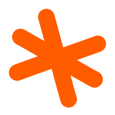
      
      
    </div>
    <div class="content_1">
      <div class="screen_2">
        <div class="block_2_1">
          
          <p>
            WAAAW — это медиа-сервис о видах <br />
            экстремального отдыха. У нас можно <br />
            найти статьи, подкасты, чек-листы <br />
            и карточки с описанием активностей.
          </p>
        </div>
        <div class="block_2_2">
          
          <p>
            Делиться знаниями и вдохновлять <br />
            людей на занятие экстремальными <br />
            активностями, преодолевать страхи.
          </p>
        </div>
        <div class="block_2_3">
          
          <p>
            Преодоление себя <br />
            Безопасный первый опыт <br />
            Полное информирование <br />
            Качественная подготовка <br />
            Практическая информация <br />
            Удобство усвоения материала <br />
          </p>
        </div>
        <div class="block_2_4">
          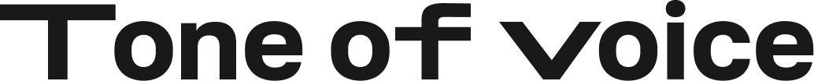
          <p>
            Мы заботливый медиа-помощник <br />
            для начинающих экстремалов. <br />
            Воодушевляем пользователя <br />
            на занятие активностями, каждый <br />
            раз предлагаем выходить за рамки. <br />
            В дерзко-заботливой форме <br />
            напоминаем о важных вещах.
          </p>
        </div>
      </div>
      <div class="screen_3">
        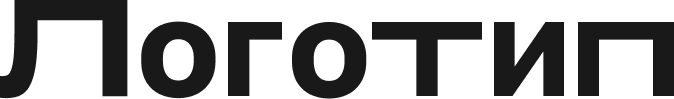
        
        
        <p>
          Графика и толщина шрифта передают стабильность и уверенность. С
          помощью различных начертаний и растяжения букв видны динамичность и
          ритм.
        </p>
        <p>
          В логотипе содержатся возглас удивления «Wow» и крик «ААА», передающие
          впечатления людей <br />
          от занятия экстримом.
        </p>
      </div>
      <div class="screen_4">
        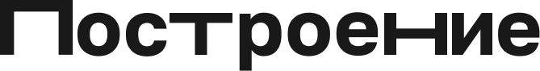
        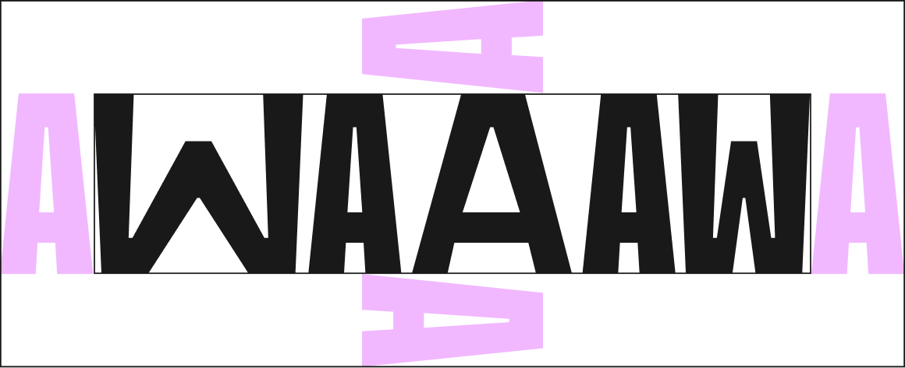
        <p>В охранном поле вариативного логотипа узкая «А» является модулем</p>
      </div>
      <div class="screen_5">
        
        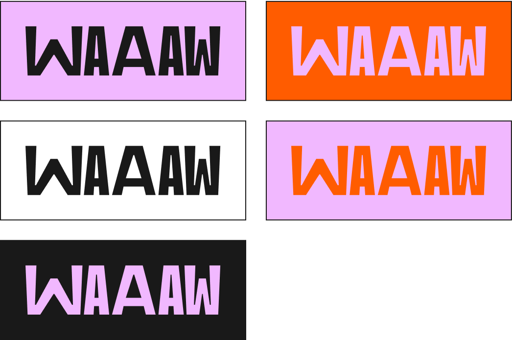
        <p>
          Представлены все возможные варианты сочетания цветов логотипа с фоном.
        </p>
        <p>1. Основной вариант</p>
        <p>3. Дополнительный вариант</p>
        
        
        <p>2. Дополнительный вариант</p>
        
        <p>
          Логотип является вариативным. Варианты товарного знака <br />
          не зависят от условий и носителей, свободны в использовании.
        </p>
      </div>
      <div class="screen_6">
        
        
        
        <p>
          Нельзя модифицировать логотип, изменять и использовать какие-либо
          другие варианты.
        </p>
        <p>
          Возможен поворот <br />
          логотипа только на 180°
        </p>
      </div>
      <div class="screen_7">
        
        <ul>
          <li></li>
          <li>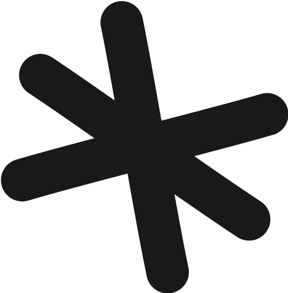</li>
          <li></li>
          <li></li>
        </ul>
        <ul>
          <li>#FF5C00</li>
          <li>#191919</li>
          <li>#F1B8FF</li>
          <li>#000000</li>
        </ul>
      </div>
    </div>
    <div class="screen_8">
      
      
      <p>GOLOS</p>
      <p>Bold</p>
      <p>
        Аа Бб Вв Гг Дд Ее Ёё <br />
        Жж Зз Ии Йй Кк Лл <br />
        Мм Нн Оо Пп Рр Сс <br />
        Тт Уу Фф Хх Цц Чч <br />
        Шш Щщ Ъъ Ыы Ьь <br />
        Ээ Юю Яя
      </p>
      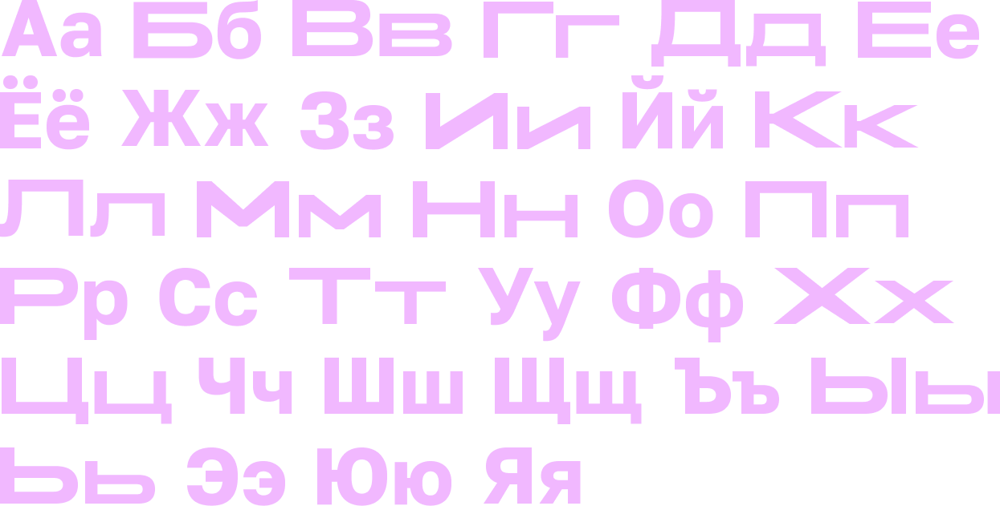
      <p>0123456789</p>
      <p>0123456789</p>
      <p>
        Для заголовков был выбран гротескный статичный шрифт. Для передачи
        движения <br />
        и пластичности некоторые согласные выборочно вытягиваются.
      </p>
      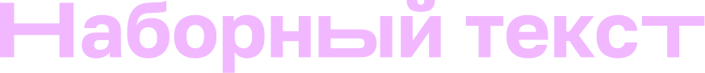
      <p>Navigo</p>
      <p>Medium</p>
      <p>Regular</p>
      <p>
        Аа Бб Вв Гг Дд Ее Ёё <br />
        Жж Зз Ии Йй Кк Лл <br />
        Мм Нн Оо Пп Рр Сс <br />
        Тт Уу Фф Хх Цц Чч <br />
        Шш Щщ Ъъ Ыы Ьь <br />
        Ээ Юю Яя
      </p>
      <p>
        Аа Бб Вв Гг Дд Ее Ёё <br />
        Жж Зз Ии Йй Кк Лл <br />
        Мм Нн Оо Пп Рр Сс <br />
        Тт Уу Фф Хх Цц Чч <br />
        Шш Щщ Ъъ Ыы Ьь <br />
        Ээ Юю Яя
      </p>
      <p>0123456789</p>
      <p>0123456789</p>
    </div>
    <div class="content_2">
      <div class="screen_9">
        
        
        <div class="block_9_1">
          <p>
            В элементы айдентики <br />
            входят фирменные иконки, вдохновленные элементами навигации. С их
            помощью мы “направляем” пользователя, указываем на информацию,
            которую они содержат.
          </p>
        </div>
        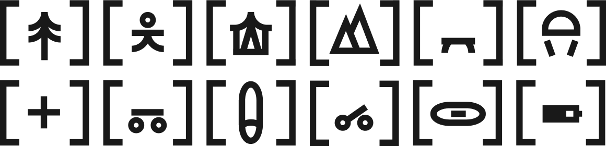
        <p class="p_9_2">
          Иконки запрещается растягивать и как-либо деформировать. На носителях
          они должны быть строго меньше логотипа.
        </p>
      </div>
      <div class="screen_10">
        
        <div class="block_10_1"></div>
        <div class="block_10_2"></div>
        <p>Значки-стрелочки могут быть покрашены в любой фирменный цвет.</p>
        <p>
          Значки-искры только <br />
          в фирменный оранжевый.
        </p>
      </div>
      <div class="screen_11">
        
        
        
        
        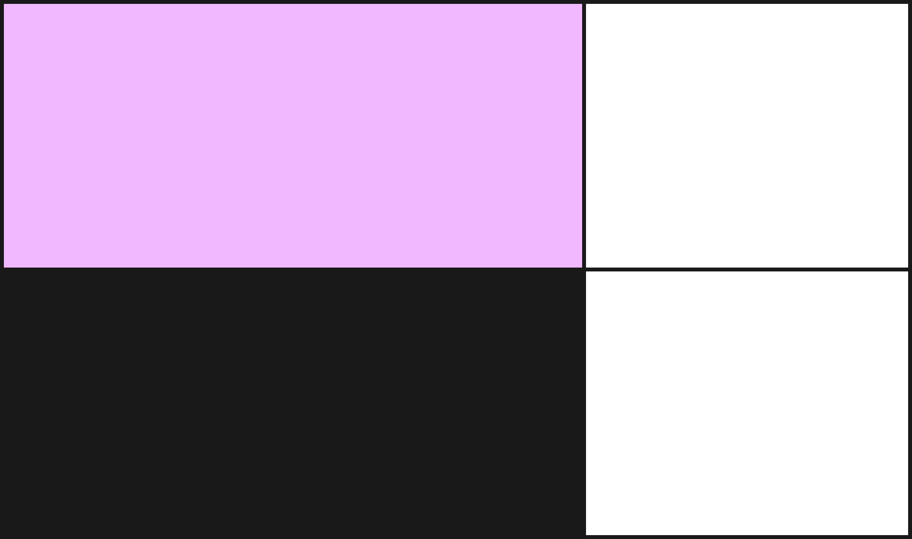
        
        <p>
          Прямоугольники с обводной используются <br />
          в качестве подложки под текст или фирменную графику. Напоминают форму
          календарей.
        </p>
      </div>
      <div class="screen_12">
        
        
        
        <p>
          Паттерн создан с помощью добавления букв разных начертаний из шрифта
          <br />
          TT Trailers, которым был набран логотип.
        </p>
      </div>
      <div class="screen_13">
        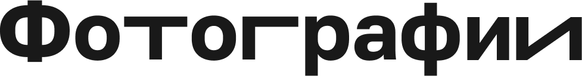
        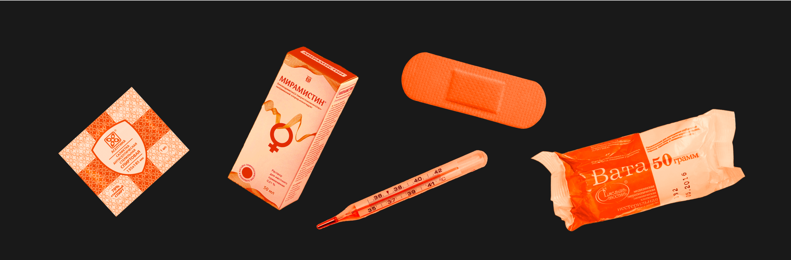
        
        <p>
          Внутри прямоугольных форм располагаются фотографии <br />
          без фона и в фирменной палитре.
        </p>
      </div>
      <div class="screen_14">
        
        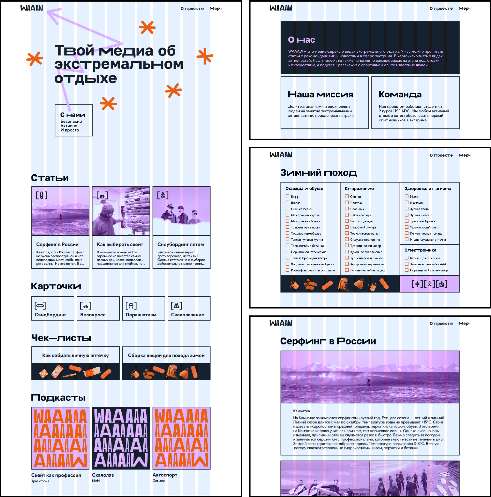
        <p>
          Сетка состоит из 12 колонок. Элементы могут располагаться на странице
          в соотношениях 1:1, 2:1, 3:1 и наоборот.
        </p>
      </div>
      <div class="screen_15">
        
        
        
        
        
      </div>
    </div>
    <div class="podval">
      <p>HSE ADC <br />Софья Каем <br />Анна Комкова</p>
      <p>Яна Глухова<br />Диана Пшенникова</p>
      
    </div>
  </body>
<<<<<<< HEAD
</html>
=======
</html> -->
>>>>>>> main
